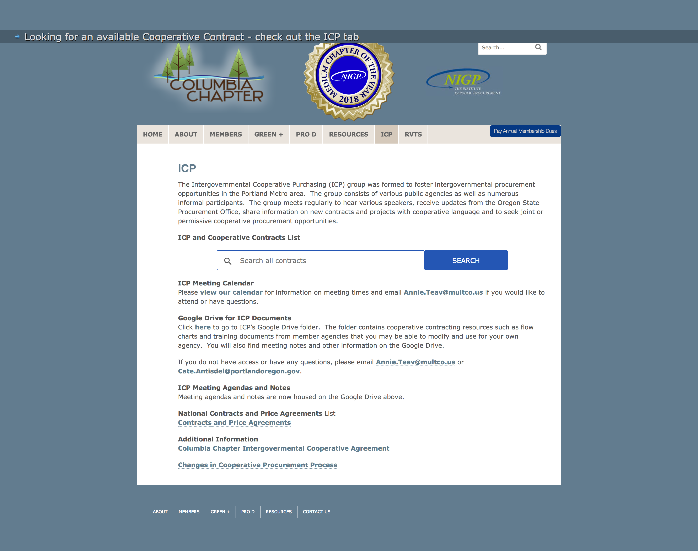
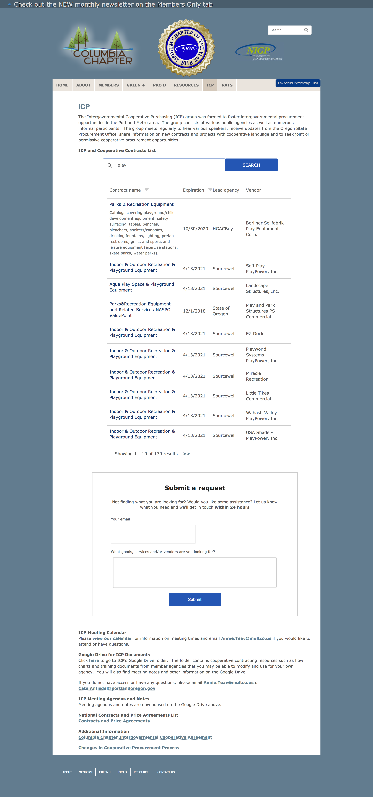

Since the Columbia NIGP site runs on WordPress we need to take some circuitous steps to get our Web Component on the page. The first step is to add the following code to the page where you would like the search box to appear:
Then we need to add this code to the WordPress site template. We were able to do this successfully after installing the Insert Headers and Footers WordPress plugin. This code will do nothing if the CoProcure element is not found on the page so will have no effect on other pages.